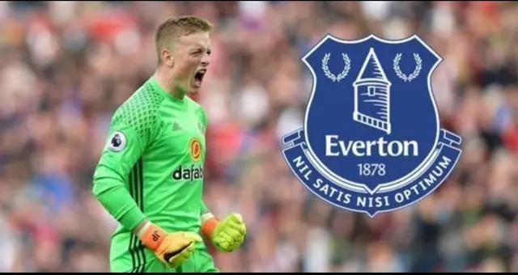
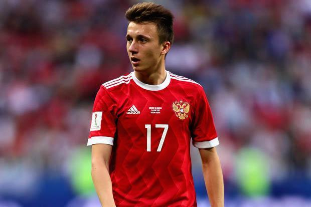
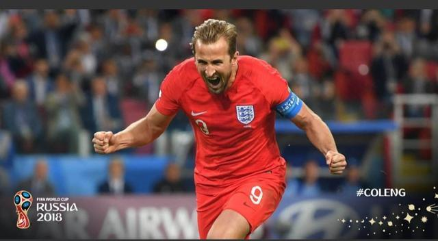
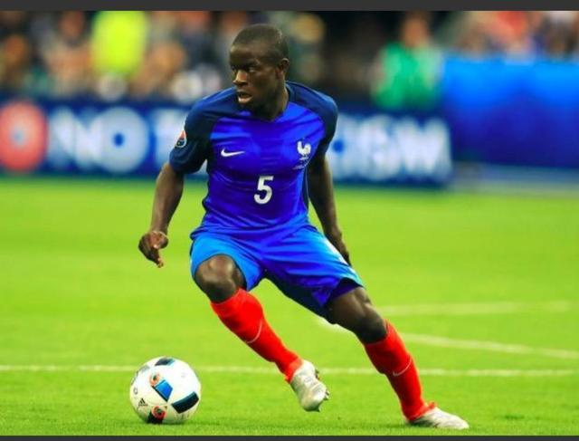
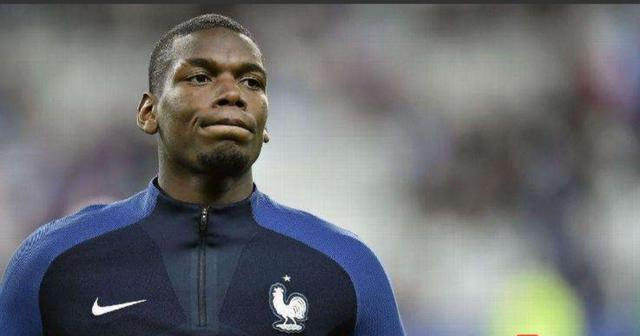
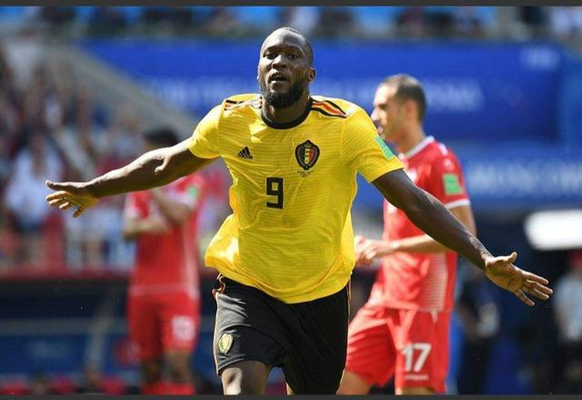
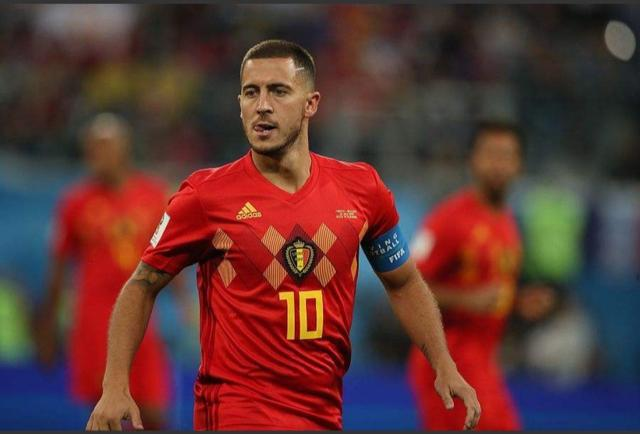
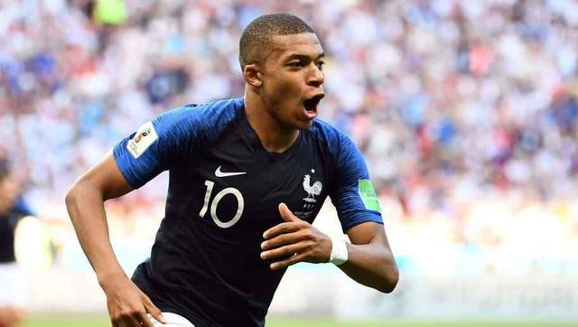

公告——
昵称：卡卡罗特
博客年龄：2年
粉丝：350w
关注：600
搜索——
热门标签——
留言板——
世界杯后身价狂涨的球员，姆巴佩、阿扎尔领先，法国大赢家
随着法国，克罗地亚比赛落下帷幕，法国队成功夺得第二座大力神杯，历时一个多月的俄罗斯世界杯正式结束。下面盘点俄罗斯世界杯后身价暴涨的球员。
8.英格兰新门将皮克福德
在本届世界杯开赛之前，没有大赛经验的英格兰新门将就倍受质疑。小组赛总共丢3球，结果还算满意，进入淘汰赛，英格兰门将在对阵哥伦比亚的点球大战中，扑出巴卡点球，打破了英格兰点球不胜的魔咒。在对阵瑞典队中，扑出瑞典三次射门，零封对手，帮助球队挺进四强，不得不说英格兰门将已经证明了自己，从没有名气，到赢得了世界的关注。
7.俄罗斯小将戈洛文
俄罗斯队历史性的闯进了世界杯八强，俄罗斯证明了自己不是最水的东道主。在世界杯开幕战中，俄罗斯小将戈洛文两传一射，任意球直接破门更是惊艳全场，戈洛文是俄罗斯队隐形杀手，帮助俄罗斯队挺进八强，而戈洛文也受到了欧洲豪门的青睐，这位小将也是俄罗斯世界杯上的重大收获。
6.英格兰前锋哈里凯恩（世界杯金靴）
虽然凯恩获得了世界杯金靴，但还是被质疑是世界杯上最水的金靴，6球中三球来自点球，两球还是在与弱队的比赛中打进，但是凯恩率领的年轻的英格兰队获得了世界杯第四名，凯恩也实现了自己像贝克汉姆一样，成为英格兰队的领袖。
5.法国队中场坎特
没有过不去的坎，只有过不去的坎特。这位冠军队中场坎特是法国队夺得冠军不可或缺的人物。上赛季英超联赛切尔西全对低迷，而坎特是切尔西队表现最佳的球员，本次世界杯，坎特不管是在中场，还是后防，都扮演至关重要的角色，这届世界杯后坎特也迈进了世界顶级中场的行列。
4.法国中场博古巴
如果说法国中场的盾是坎特，那中场的矛是博古巴。博古巴是法国队中场的发动机，多次策动法国队的进攻，并在小组赛与澳大利亚比赛中中场射门造成对手乌龙，和决赛就打入锁定冠军的一球。虽然博古巴的光芒被姆巴佩覆盖，但博古巴的贡献有目共睹。
3.比利时前锋卢卡库
小魔兽卢卡库在本届世界杯打进4球，是比利时攻城拔寨的利器，曼联前锋在本赛季的高进球效率也延续到了世界杯比赛上，欧洲红魔创记录离不开前场的卢卡库，欧洲红魔卢卡库和曼联红魔卢卡库身价上涨不菲。
2.比利时核心阿扎尔
上赛季英超，切尔西表现较好除了坎特以外，另一个就是阿扎尔。阿扎尔在本届世界杯上打进3球，在比利时前场有阿扎尔和卢卡库，中场有德布劳内，帮助欧洲红魔终于证明了自己自己。而皇马一直有意想买阿扎尔，相信在本届世界杯后皇马买阿扎尔更要加重筹码了。
1.法国未来之星姆巴佩
19岁的年轻小将姆巴佩今夏惊艳世界杯，在对阵阿根廷比赛中一人摧毁了阿根廷整条防线，在前场得球后就会对对手造成巨大的威胁，除非防守球员放铲，不然谁也阻止不了这位小将。姆巴佩本届世界杯打进4球，帮助法国队再次捧起大力神杯，而这位19岁的小将要成为巨星还缺乏火候，但是他必定会是法国足坛的未来领袖。
